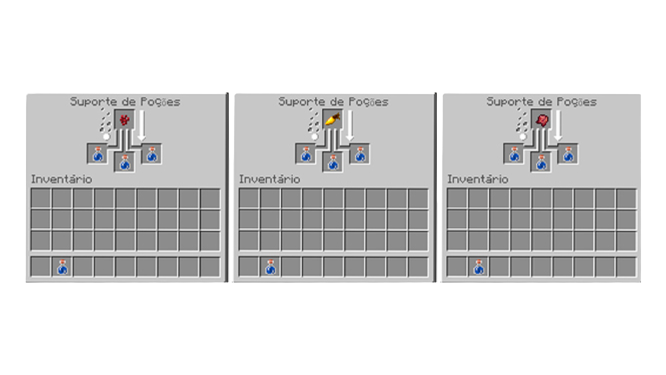

Veja a lista de Poções do jogo
Dicas de Poções que podem ser Craftadas
Curiosidades do Minecraft
No Minecraft você consegue criar algumas poções com diversos tipos de efeitos, alguns ruin e outros bons. Descubra qual poção você irá fazer!

Que poção você irá criar?
Escolha uma alternativa
Cenoura Dourada
Olho de Aranha Fermentado
Fungo do Nether
Escolha uma alternativa
Redstone
Pólvora
Poção que irá criar
Voltar
Voltar a Home